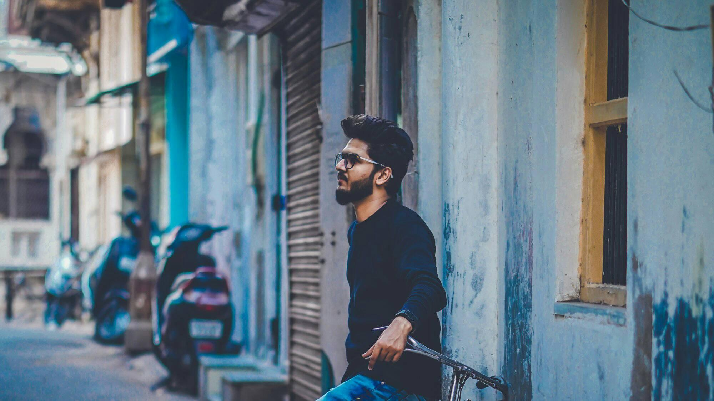

About Me
I am Arth patel final year student of Master of Data Science at Macquarie university in Sydney expecting to graduate in November 2021. As a Engineer, I enjoy bridging the gap between engineering and coding — combining my technical knowledge with my thoughts and solve the real life problems. My goal is always to build things that are scalable and efficient under the hood while providing engaging, pixel-perfect user experiences.

The four-year engineering course in Information Technology has always been a beautiful experience and has inspired me to put the knowledge into my master’s degree. This would allow me to enhance my knowledge about technology and its pros and cons and the guidance I would need. To attain my goal, my priority would be in the field of research which will consist of experiencing the applications in the real world steered by comprehensive know-how about technology.
During the first two years of undergraduate study, I studied courses like Data structure, Database management system, Operating System, Object-Oriented Programming with C++, Computer Networks, Computer Organization, Advanced Engineering Mathematics. These courses helped me gain a strong background in the fundamentals of Information Technology. These were aptly complemented by the laboratory courses. During the last two years of my studies, I took advanced courses like Artificial Intelligence, Big Data Analytics, Data Mining, Information and Network Security, Web Technology, Analysis and Design of Algorithms, and Cyber Security.
I am one of the few students who were privileged in the final year in Engineering by finding real-time problems in societies and select my final year project to solve them. Under the guidance of Assistant Professor, I have to work on my final year project which is named “Predictive Intelligence To Insure Travellers”. This project is based on Data Science where we analysis the past data of flight delay, climate data and air traffic data and predict the flight delay time on booking dates which help individuals to book tickets with insurance of those tickets and help them to save money. We developed this project by using highly effective and
most popular web development technologies like Python, HTML, CSS, Bootstrap, JavaScript, MySQL and highly focus on security and efficiency.
I have always believed in maintaining a healthy balance between my studies and extracurricular activities. Simultaneously, active participation in a wide range of extracurricular activities has ensured the all-round development of my personality. I had established a Mozilla Campus Club; my role was to contribute open-source projects which are taken by Mozilla and also organized workshops and technical session. As participation, I had managed many events on cybersecurity and privacy awareness with the help of the Mozilla community. From the beginning I had a keen interest in the various competition that helps me to enhance my knowledge;
I have participated in various college's technical festival and also participated in quiz competitions. I have also participated in many hackathons; it’s an opportunity for me to bridging the gap between engineering and design combining my technical knowledge with my thoughts and solve the real-life problems. My goal is always to build software that is scalable and efficient under the hood while providing engaging, pixel-perfect user experiences. As my real enthusiasm with the concept of the hackathon, I had participated in Rajasthan Hackathon and community hackathons like digital oceans. That helps me to distil my visionary concepts down to actionable solutions.
I had adequate understanding in backend web programming after completing my Bachelor of Engineering, but I also wanted to study frontend web design, thus I got the chance to work with Vidhi Graphics and Designing.
March - 2013
GSEB BOARD
BHAGWATI VIDHYALAYA
secondary eduaction with higher gread
March - 2015
HSEB BOARD
BHAGWATI VIDHYALAYA
higher secondary eduaction with higher gread
July - 2019
GUJARAT TECHNOLOGY UNIVERSITY
GEC MODASA
Bachelor of Enginnering Information Technology
2020 - Present
MACQUARIE UNIVERSITY
Sydney
Master of Data Science
LANGUAGES
- Python
- PHP
- JavaScript
DATABASE
WEB DEVELOPMENT
ONGOING ON DATA SCIENCE
- Artificial Intelligence
- machine learning
- Deep Learning
- Big Data